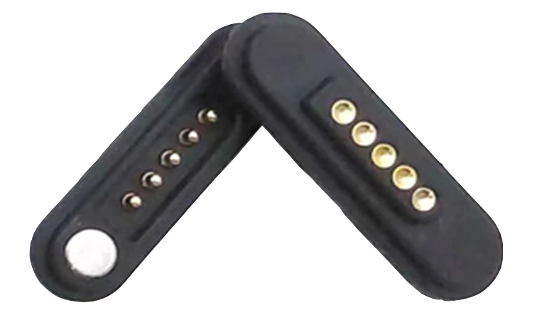

In android studio a test UI was created with three buttons (one to execute each macro/task) and a text box outputs which task is clicked for debugging purposes. Since the Bluetooth functionality is not fully set up yet, the buttons are used in place to simulate a detection of a gesture from the band. The first task sets a timer for five seconds in the device’s clock app. The second task opens google maps and shows the location of Googleplex in California. The last task sets an alarm for 8am in the device's clock app. These three tasks make use of android intents for android developers. Some other tasks that were briefly looked into but not fully functioning are opening a webpage, making a call, taking a photo, and playing music on YouTube Music. For these tasks, more time is needed to debug and fine tune them. For some reason opening a webpage doesn’t function at the moment. Making a call requires a more complex permission request than most app intents, so that task was left to deal with later. Currently taking a photo does open the device's camera app but the user still needs to press the button to take the photo. Also the captured photo doesn’t properly save to the devices photo library. There doesn’t seem to be much existing documentation on how to play music through YouTube Music. Originally YouTube Music was chosen because that app was available on the emulator we were testing on. However we have acquired a physical device to test on which can have Spotify running from it. Spotify seems to have more documentation surrounding how to use app intents on it so that will be tested at a later date.
A piezoelectric haptic actuator is being used for feedback to the user on a successful gesture detection. In order to control the actuator, the BOS1901 is being used for boosting and controlling the 12Vpp waveform that causes vibration to the piezo device. To communicate with the BOS1901 and program it to output a certain waveform at a certain time, a SPI bus is connected between it and the NRF52811. This SPI bus was set up in the firmware that implements the Zephyr kernel and words are sent 8 bits at a time sending both the register address and data bytes. After some debugging and logging of the SPI bus on a debugger to make sure the correct data was being sent, the haptic actuator was successfully sent a waveform to cause a vibration detectable by the user. This firmware driver will be incorporated in the main firmware/software loop logic later on.
After the app was able to read values from BLE. Progress is made towards storing data received from BLE and processing them into features for SVM. The frequency of scans received was also increased through a setting in the app so now it can scan for BLE data as fast as possible.
Since the wearable device sends data via BLE and does not receive anything back from the app, the app and wearable will communicate via different status byte values sent through BLE. The wearable device will be in charge of detecting the finger snap based on a calibrated threshold. Once the snap is detected, it will flip a bit in the BLE message and the app will know to start recording values for gesture detection. For calibration, the process will be triggered by a UI button press on the arm band. This would cause the calibration byte in the BLE message to update. The finger snap force is calibrated just on the wearable and stored in the Flash while the gesture calibration info is stored on the app since the wearable does not have enough storage for the SVM model. While going through each stage of calibration, the main idea is that the wearable device will be in charge of keepig track of which stage of the calibration is it in (i.e. how many gestures have been recorded) and the app will update the UI and store data based on the calibration byte. We designed it like this because the app can only receive data from the wearable device but not send data back.
We attempted the second set of Macro Snap connector modules assembly. Shortly after, we found our methodology was inaccurate and imprecise for the amount of build time that it took, in addition to the quality of the final product. The contacts made between the custom pogo pin magnetic connectors were not steady, and so we had to add elastic bands to the connectors to hold them together as the strength of the magnet was not sufficient to overcome build inaccuracies. The decision to buy off-the-shelf connectors was made, and a set of 5 pin magnetic pogo connectors was purchased.
Since we decided to use off-the-shelf connectors, we needed to update the CAD models to accommodate them. We also just received the shipment for the LEDs that go into the modules. When we tried to put in the LED the slot in the housing for it was a bit too small so we also enlarged the slot in the compute module. However for the FSR modules, we are going to keep the old design and drill a larger hole for the LED. Since the tolerance for the old housing is pretty tight and we already placed the PCBs and FSR sensors, it is difficult and time consuming to take them out.
Firmware of the Macro Snap board was developed to broadcast all values read from the ADC, program status, calibration button status and the closed loop status (i.e. if the band has been fully connected back together). This was verified through the NRF Connect App as the correct packets were sent through the Eddystone Beacon setup on the device. This makes the device a BLE broadcaster with a specific packet structure for rapid broadcasting of FSR and status information to the Macro Snap app.
A BLE scanner is implemented in the Android app to receive data transmitted from the Macro Snap board. To filter out all other near by devices, we check that the device name matches ours. After receiving the service data (which is in a byte array) from the scan, we convert the items in the array to unsigned integer values which becomes the same as the broadcasted values.
Using the reflow method of PCB assembly, I aligned a stencil to three Macro Snap Main Logic Boards (MLBs) and applied solder paste to the boards. I then used all of the components ordered previously and a set of tweezers to carefully place the components onto the relevant pads. This was done carefully as some of the packages for the components were quite small, including the chip antenna that was sized as an 0201 component. Once all components were carefully placed, all three PCBs were placed into a reflow oven that was set with the same heating profile as indicated by the solder paste datasheet. Once completed, the boards were removed and then visually inspected for any shifted components or solder bridges during reflow. These issues were reworked, which lead to the final step of power and debug validation that consisted of testing the power rails for continuity, isolation and appropriate voltage in addition to communication with the main MCU over the debug protocol. Once this was verified, the first order bring-up of the MLBs was complete.
In order to route the “Macro-bus” that contains the main voltage and analog rails from each of the FSRs and direct them to the compute module, specific connector modules that will also allow the user to resize the armband were created. They contain a printed male and female bracket, 2 magnets, ribbon cable, 5 pogo pins and 5 contact pads to create magnetic pogo pin connectors that will snap and mate together to extend an armband while routing the main signals.
To run the SVM on the app, we found Smile, a library containing machine learning algorithms for languages including Java and Kotlin. This is perfect for us to use in the Android app. We tried out the library in a Jupyter Notebook using a small dataset of FSR sensor values we gathered previously using an Arduino and used the data to train a SVM. We were able to achieve ~80% accuracy with cross validation which was similar to the results we've seen before.
In order to use Smile library on an Android device, it needs to have a minSdkVersion of 26 and our devices used an older version. So we decided to use an emulator for app development for now. We were able to run the SVM in the emulator, but had some trouble reading and writing files to internal storage since we are new to Android development.
In order to fit the electronics needed for the Macro Snap project on a wearable device, close collaboration with the mechanical team was required to dimension the boards correctly. This defined the amount of components and size of battery that could fit in the device. From size constraints and determining the sensor specifications, (FSR circuits, haptic module, LED indicators) schematics were created in Altium Designer. These schematics were then used to layout the PCBs for the FSR, compute and connector modules.
Along with the design of the PCBs, the CAD is created to house each component. The product consists of three types of modules: the compute, FSR, and interlock modules, that joined together to create the armband. Our mechanical design is minimal and as small as possible so that it is unobtrusive to the user. These modules will be 3D printed and assembled together.
Once the PCBs had been designed and the BOM finalized based on active and in stock components, the PCBs were manufactured as 4 layer boards at JLCPCB. The components were all sourced and purchased from Digikey.
Libsvm is a simple and efficient open source C/C++ library for SVM classification and regression. Our initial plan was to use this to perform gesture classification on the wearable device. We performed initial testing of the code to ensure that it runs on the device without issue. We only had to modify the code such that it does not read and write data from files since that is not supported on the device.
Unfortunately the chip does not have enough FLASH/RAM for training or saving the model so we are pivoting to running the SVM on the Android app instead.
We checked that electronics fit into 3D printed housings and made list of changes that need to be made or extra parts that need to be created.